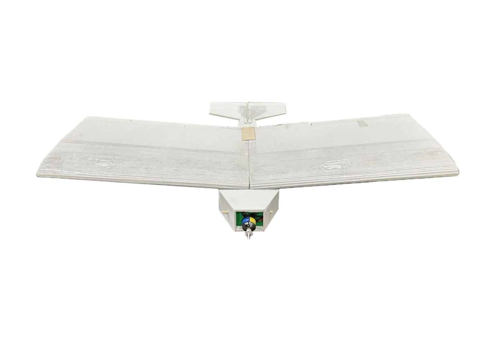

Establishing the Baseline Aircraft
Built a foamboard, balsa, and PLA aircraft with conventional ailerons and elevator, matching The SMART Hawk's planform, area, and 5° dihedral. Stable flight established the baseline and placed the required center of gravity at 23% of chord behind the inner wing leading edge.